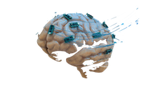

Projects
-
HEAD INJURY AND NEUROREHABILIATION
Bjorn and Anna have a three year old son, Hansie, with a severe brain injury who, it is predicted, will die. However, they receive new hope when a specialist in "neurorecon struction" tells them of a technique in which a combination of enzymes, growth factors, and microelectrical stimulation guided by a computer driven three dimensional graphics program could restore Hansie's brain to a potentially functioning state. The process takes about six months because the neuroreconstructive activity takes a similar amount of time to fetal growth and differentiation of the brain. Hansie will lose all his memories, cannot be guaranteed to have the same temperament as he had before the accident, and will require re-education as if he were a newborn baby (he will more or less catch up with his peers about three or four years after his reconstruction). Bjorn and Anna recognise that they are taking on an enormous task but are so overjoyed at the prospect of not losing Hansie and, indeed, having him back in a way that they hope will turn out well in the end, that they are more than willing to go ahead.
Read More -

VISION RESTORATION THROUGH CYBERNETICS
It is currently possible to provide blind patients with surrogate vision sufficient to detect things in their environment by using a combination of video camera technology and an array of electrodes delivering impulses to the patient. Let us imagine that the technology reaches the point where the electrodes are directly onlaid so that they stimulate the brain and the person concerned then uses the information in the patterns of excitation that are set up to exploit their visual environment.
Read More -

EXTENSIVE BRAIN INJURY AND REPLACEMENT WITH MICRONETWORKS
Henri-Charles's neuroreconstruction is very similar to Hansie's, with one difference: it is facilitated by and incorporates a set of relatively modular microchips with the capacity to respond to biological signals generated by cell membranes and neural cell columns. The modular chips subserve some of the well established functional connections that are known to occur in the human brain to do with sensorimotor interaction in perceptual cycles and some stereotypical responses such as those involved in affect programs, and some of the assemblies created replace damaged neural tissue.
Read More -

PERSONALITY UPGRADE WITH MICRONETWORKS
The following story extends our intuitions about cyborgs (in a similar way to the film Bicentennial Man).
Read More
Peggy and Bob are married but, sadly, not happily so. They began married life as a fairly typical young married couple but then Peggy fell prone to episodes of depression, spending more and more time at home, not working, and lamenting her inability to have children. She has tried antidepressants and psychotherapy but no progress has been made and she has increasingly taken to her bed, neglecting herself, her marriage, and any hope of a career. Bob is desperate as he is increasingly fearful of leaving her alone. His aunt mentions an excellent service, "Cybo-help", that provides androids for just such cases. He goes to the centre and is shown a recently released companion/carer model mainly used for caring for older folk but which can be used also with young disabled people. He purchases an android, calls it Andrea, and takes it home.
Andrea is marvellous. She brings tea in bed, does the work unobtrusively, spends endless hours talking to Peggy, patiently involving her in various activities so that she more than lives up to the "Cc" (for Compassion and caring circuit) that she has embossed behind the hairline of her right temple.
After an extended business trip he comes home to a Peggy who has made significant gains in her psychological functioning and he finds that she has had some treatment in the revolutionary neuropsychiatrie clinic recently opened in their city. She is the Peggy he married?active, positive in her attitude, and relaxed about life. After his next trip he finds she has taken up watercolour painting and joined a reading group. In fact, Peggy has improved so much that when the time comes to renew Andrea's lease, she is returned to "Cybo-help". Bob and Peggy miss Andrea and think of Andrea as a person.